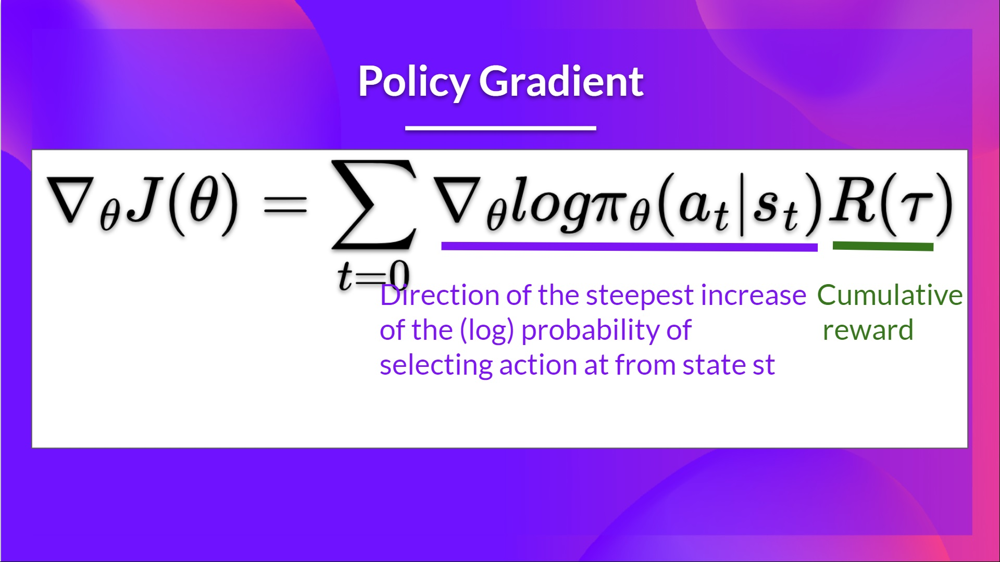

Actor-Critic Methods#
Note
In Policy-Based methods, we aim to optimize the policy directly without using a value function. We saw that Reinforce worked well. However, because we use Monte-Carlo sampling to estimate return, we have significant variance in policy gradient estimation.
So today we’ll study Actor-Critic methods, a hybrid architecture combining value-based and Policy-Based methods that helps to stabilize the training by reducing the variance using:
An Actor that controls how our agent behaves (Policy-Based method)
A Critic that measures how good the taken action is (Value-Based method)
The Problem of Variance in Reinforce#
In Reinforce, we want to increase the probability of actions in a trajectory proportionally to how high the return is.

This return \(R(\tau)\) is calculated using a Monte-Carlo sampling. We collect a trajectory and calculate the discounted return, and use this score to increase or decrease the probability of every action taken in that trajectory.
The advantage of this method is that it’s unbiased. Since we’re not estimating the return, we use only the true return we obtain.
Given the stochasticity of the environment and stochasticity of the policy, trajectories can lead to different returns, which can lead to high variance. Consequently, the same starting state can lead to very different returns. Because of this, the return starting at the same state can vary significantly across episodes.

The solution is to mitigate the variance by using a large number of trajectories. However, increasing the batch size significantly reduces sample efficiency. So we need to find additional mechanisms to reduce the variance.
Advantage Actor-Critic (A2C)#
Reducing variance with Actor-Critic methods#
The solution to reducing the variance of the Reinforce algorithm and training our agent faster and better is to use a combination of Policy-Based and Value-Based methods: the Actor-Critic method.
To understand the Actor-Critic, imagine you’re playing a video game. You can play with a friend that will provide you with some feedback. You’re the Actor and your friend is the Critic.
You don’t know how to play at the beginning, so you try some actions randomly. The Critic observes your action and provides feedback. Learning from this feedback, you’ll update your policy and be better at playing that game. On the other hand, your friend (Critic) will also update their way to provide feedback so it can be better next time.
This is the idea behind Actor-Critic. We learn two function approximations:
A policy that controls how our agent acts: \(\pi_{\theta}(s)\)
A value function to assist the policy update by measuring how good the action taken is: \(\hat{q}_{w}(s, a)\)
The Actor-Critic Process#
Let’s see the training process to understand how the Actor and Critic are optimized:
At each timestep \(t\), we get the current state \(S_{t}\) from the environment and pass it as input through our Actor and Critic.
Our Policy takes the state and outputs an action \(A_{t}\).
The Critic takes that action also as input and, using \(S_{t}\) and \(A_{t}\), computes the value of taking that action at that state: the Q-value.
The action \(A_{t}\) performed in the environment outputs a new state \(S_{t+1}\) and a reward \(R_{t+1}\).
The Actor updates its policy parameters using the Q value.

Thanks to its updated parameters, the Actor produces the next action to take at \(A_{t+1}\) given the new state \(S_{t+1}\).
The Critic then updates its value parameters.
Tip
If we fix the TD target.
Adding Advantage in Actor-Critic (A2C)#
We can stabilize learning further by using the Advantage function as Critic instead of the Action value function.
The idea is that the Advantage function calculates the relative advantage of an action compared to the others possible at a state: how taking that action at a state is better compared to the average value of the state. It’s subtracting the mean value of the state from the state action pair:

The extra reward is what’s beyond the expected value of that state.
If \(A(s, a) > 0\), our gradient is pushed in that direction.
If \(A(s, a) < 0\), our gradient is pushed in the opposite direction.
The problem with implementing this advantage function is that it requires two value functions - \(Q(s, a)\) and \(V(s)\), Fortunately, we can use the TD error as a good estimator of the advantage function.

Pytorch example#
Model#
import torch
import torch.nn as nn
import torch.nn.functional as F
import torch.optim as optim
class Policy(nn.Module):
"""
implements both actor and critic in one model
"""
def __init__(self):
super(Policy, self).__init__()
self.affine1 = nn.Linear(4, 128)
# actor's layer
self.action_head = nn.Linear(128, 2)
# critic's layer
self.value_head = nn.Linear(128, 1)
# action & reward buffer
self.saved_actions = []
self.rewards = []
def forward(self, x):
"""
forward of both actor and critic
"""
x = F.relu(self.affine1(x))
# actor: choses action to take from state s_t
# by returning probability of each action
action_prob = F.softmax(self.action_head(x), dim=-1)
# critic: evaluates being in the state s_t
state_values = self.value_head(x)
# return values for both actor and critic as a tuple of 2 values:
# 1. a list with the probability of each action over the action space
# 2. the value from state s_t
return action_prob, state_values
model = Policy()
optimizer = optim.Adam(model.parameters(), lr=3e-2)
Env#
import gym
env = gym.make('CartPole-v1')
env.reset(seed=2)
(array([-0.02383879, -0.02015088, 0.03142257, -0.04080841], dtype=float32),
{})
One episode#
from collections import namedtuple
import numpy as np
from torch.distributions import Categorical
SavedAction = namedtuple('SavedAction', ['log_prob', 'value'])
def select_action(state):
state = torch.from_numpy(state).float()
probs, state_value = model(state)
# create a categorical distribution over the list of probabilities of actions
m = Categorical(probs)
# and sample an action using the distribution
action = m.sample()
# save to action buffer
model.saved_actions.append(SavedAction(m.log_prob(action), state_value))
# the action to take (left or right)
return action.item()
def finish_episode():
"""
Training code. Calculates actor and critic loss and performs backprop.
"""
R = 0
eps = np.finfo(np.float32).eps.item()
saved_actions = model.saved_actions
policy_losses = [] # list to save actor (policy) loss
value_losses = [] # list to save critic (value) loss
returns = [] # list to save the true values
# calculate the true value using rewards returned from the environment
for r in model.rewards[::-1]:
# calculate the discounted value
R = r + 0.99 * R
returns.insert(0, R)
returns = torch.tensor(returns)
returns = (returns - returns.mean()) / (returns.std() + eps)
for (log_prob, value), R in zip(saved_actions, returns):
advantage = R - value.item()
# calculate actor (policy) loss
policy_losses.append(-log_prob * advantage)
# calculate critic (value) loss using L1 smooth loss
value_losses.append(F.smooth_l1_loss(value, torch.tensor([R])))
# reset gradients
optimizer.zero_grad()
# sum up all the values of policy_losses and value_losses
loss = torch.stack(policy_losses).sum() + torch.stack(value_losses).sum()
# perform backprop
loss.backward()
optimizer.step()
# reset rewards and action buffer
del model.rewards[:]
del model.saved_actions[:]
returns = \(\left[R_{0}, R_{1}, \dots, R_{T}\right]\) where \(R_{t} = r_{t} + \gamma r_{t+1} + \gamma^{2}r_{t+2} + \dots\)
policy_loss = \(\sum_{i=0}^{T}-\log\pi_{\theta}(a_{t}|s_{t})(R_{t} - \hat{V}_{w}(s_{t}))\)
value_loss = \(\sum_{i=0}^{T}|R_{t} - \hat{V}_{w}(s_{t})|\)
Main loop#
from itertools import count
def main():
running_reward = 10
# run infinitely many episodes
for i_episode in count(1):
# reset environment and episode reward
state, _ = env.reset()
ep_reward = 0
# for each episode, only run 9999 steps so that we don't
# infinite loop while learning
for t in range(1, 10000):
# select action from policy
action = select_action(state)
# take the action
state, reward, done, _, _ = env.step(action)
model.rewards.append(reward)
ep_reward += reward
if done:
break
# update cumulative reward
running_reward = 0.05 * ep_reward + (1 - 0.05) * running_reward
# perform backprop
finish_episode()
# log results
if i_episode % 10 == 0:
print('Episode {}\tLast reward: {:.2f}\tAverage reward: {:.2f}'.format(
i_episode, ep_reward, running_reward))
# check if we have "solved" the cart pole problem
if running_reward > env.spec.reward_threshold:
print("Solved! Running reward is now {} and "
"the last episode runs to {} time steps!".format(running_reward, t))
break
main()
Episode 10 Last reward: 12.00 Average reward: 13.41
Episode 20 Last reward: 10.00 Average reward: 11.82
Episode 30 Last reward: 10.00 Average reward: 11.44
Episode 40 Last reward: 10.00 Average reward: 12.48
Episode 50 Last reward: 29.00 Average reward: 13.10
Episode 60 Last reward: 22.00 Average reward: 14.30
Episode 70 Last reward: 42.00 Average reward: 20.13
Episode 80 Last reward: 87.00 Average reward: 64.19
Episode 90 Last reward: 130.00 Average reward: 71.48
Episode 100 Last reward: 1857.00 Average reward: 195.87
Episode 110 Last reward: 26.00 Average reward: 173.51
Episode 120 Last reward: 179.00 Average reward: 164.31
Episode 130 Last reward: 239.00 Average reward: 178.51
Solved! Running reward is now 815.4286146729273 and the last episode runs to 9999 time steps!